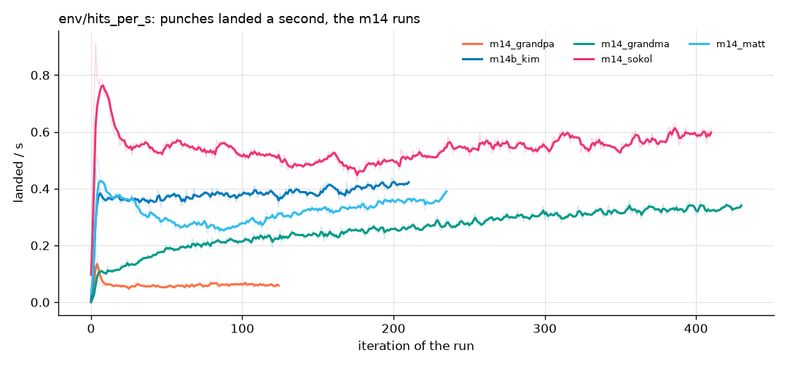
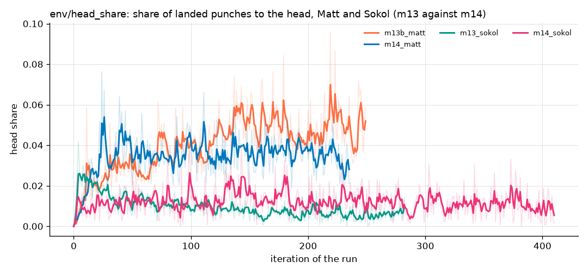
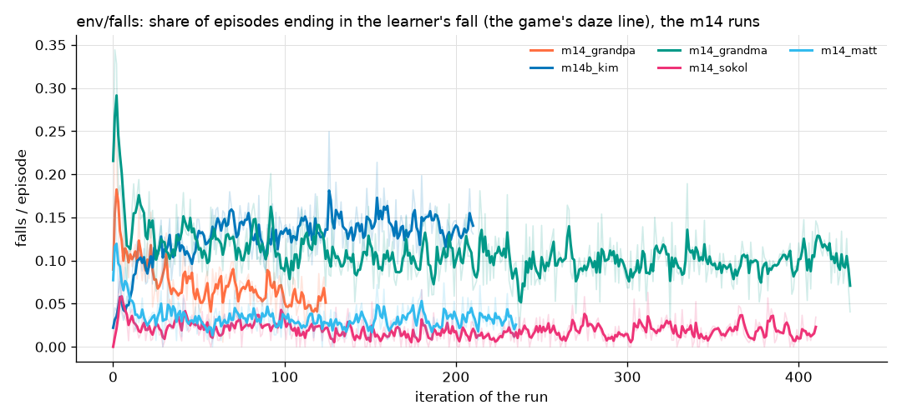

Day training: m14 attack round, head shots, the Melee's eyes
2026-10-19 10:00 to 14:30 · v2 bodies · trained under the game's daze line (26 / 9 / 3.5 s / body 0.45) · exams in C MuJoCo 3.5.0, 12 rounds, against the game's roster (logs/book_night_mix.json)
Per boxer
| Boxer | Run | Lines (game → new) | What changed | Export |
|---|---|---|---|---|
| Sokol | m14_sokol | 5 → 6 | attack 0.44/s at 4.6 → 0.58/s at 5.1 m/s (passes); head 0% → 0%; guard passes (head shots taken 0.08 → 0.06/s) | m14_sokol/latest_sokol.onnx (103) |
| Grandma | m14_grandma | 4 → 4 | attack 0.13/s at 2.3 → 0.57/s at 2.6 m/s (speed mark 3.0), head 15 → 48%; guard 51 → 80%; carrying on 14/22 → 17/23 | m14_grandma/latest_grandma.onnx (103) |
| Kim | m14b_kim | 5 → 4 | attack 0.47/s at 2.9 → 0.59/s at 4.0 m/s (mark 4.4); chin 0.59 → 0; footing lost: 1.67 falls/min against Sokol | no |
| Grandpa | m14_grandpa | not examined | landed 0.05 → 0.06/s in training (125 iterations): no gain | no |
| Matt | m14_matt | exam not finished by 14:35 | training: landed 0.57 → 0.36/s (body price x0.6), head 2 → 3% | pending (logs/compare_m14_matt.json if the exam completes) |
| Zombie, Nick, Trump | - | - | no m14 planned; their melee rounds not run | - |
Why Matt and Sokol do not hit the head
| Matt | Sokol | Nick | Zombie | |
|---|---|---|---|---|
| pelvis distance kept (median) | 0.76 m | 0.76 m | 0.71 m | 0.72 m |
| head above the glove at a body landing | 32 cm | 41 cm | 23 cm | 12 cm |
| fast glove within 10 cm of the head | 0.17/s | 0.12/s | 4.6/s | 1.7/s |
| their head punches blocked | 0.10/s | 0.09/s | 1.48/s | 0.03/s |
| head share | 5% | 0% | 77% | 82% |
tools/head_diag.py, C MuJoCo 3.5.0, the game's roster. Same range, not blocked: the punch is thrown at the chest, so a higher head
price is never met. Fix tried: --head-aim-w (pay for a glove closing on the head within 25 cm). At 0.05 it was 0.004 a step and did nothing
(Sokol); at 0.25 (Matt) the gloves reach the head more (aim term 0.022 → 0.035 a step) but landings only 2 → 3%. Next: aim at the head in the
footwork stage, or a punch-height term.
The Melee: bodies in the observation (106 inputs)
Match brains read the 103 numbers and then [x, y, seen]: x, y = to_heading(p - pos, yaw)[:2] clamped to [-3, 3], pos/yaw the boxer's own
pelvis, p the pelvis of the nearest downed body by horizontal distance (never the opponent), seen = 1 if within 3.0 m, else all three 0. Built
(envs/match.py, train_gauntlet.py --obs-bodies, 103 brains widened with zero weights) and checked against the spec
(tools/check_body_obs.py). Training round mel1_NAME staged in logs/queue_day.json, not run.
| Today's brains, 2 bodies down | Matt | Zombie | Nick | Sokol | Kim | Trump | Grandma | Grandpa |
|---|---|---|---|---|---|---|---|---|
| falls nobody caused /min (1v1: 0.00) | 1.24 | 0.67 | 0.67 | 0.38 | 0.57 | 0.57 | 0.38 | 0.29 |
| worst opponent | 3.33 | 2.67 | 1.33 | 0.67 | 2.00 | 1.33 | 2.00 | 1.33 |
tools/melee_exam.py, 2 rounds x 7 opponents; nearly every fall is a trip (a body touched in the last 1.5 s).
The three charts that matter
1. Punches landed a second (env/hits_per_s)

Toddler Grandma's line goes up: she learned to hit. Grandpa's stays at the bottom.
Child Each line is a boxer practising. Grandma hit three times more by the end, Kim a bit more, Sokol and Matt a little less, and Grandpa never found a way.
Adult First vs last 20 iterations: Grandma 0.10 → 0.33, Kim 0.35 → 0.42, Sokol 0.65 → 0.59, Matt 0.37 (the body price cut), Grandpa 0.07 → 0.06. Compared with m13 last night (hit 2.0), the extra landing pay (3.0) worked only where the range term let the boxer in: Grandma trained at range 0.72 (her style's 0.8 replaced), Grandpa at his style's 0.9 with a crowding charge.
2. Share of punches to the head (env/head_share), Matt and Sokol

Toddler All the lines stay near the floor: they still hit the tummy, not the head.
Child We paid them more for aiming at the head, but their punches go to the chest, so the extra pay hardly helped.
Adult Matt m13b 1.6 → 4.7%, m14 1.7 → 3.3%; Sokol m13 2.1 → 0.7%, m14 0.9 → 0.8%. Worse than m13 for Matt because body landings were made cheaper (x0.6) before head landings existed to replace them. The cause is the punch's height (table above), so the next fix belongs in how the punch is aimed, not in the price.
3. Falls per episode (env/falls), under the game's daze line

Toddler The lines go down for most: they fall over less. Kim's goes up.
Child With the game's softer chin, boxers get knocked down more in practice; most learned to stay up anyway, but Kim fell more as she attacked more.
Adult Grandma 0.17 → 0.10, Sokol 0.03 → 0.02, Matt 0.06 → 0.03, Grandpa 0.12 → 0.05, Kim 0.07 → 0.13. Kim's rise matches her exam: footing lost, all of it against Sokol (1.67 falls a minute). Training under the game's daze (legs at 26 instead of 42) did not cost the exam's chin line for anyone: chin went to 0.00 for Kim, Grandma and Sokol.
What went wrong
Running 12 CPU processes beside training ran the machine out of memory (0.9 GB free; two exams failed "paging file too small") and cut training
to ~4k samples a second; the two hung pythons from last night held 12 GB until the owner killed them. The session stopped at 11:45 and took the runner
with it (Kim carried on from her save). Grandpa's first m14 spent 40 minutes against his own range term. Not run: m14b_grandpa
(--style range_m=0.7 crowd=0) and the eight melee rounds; both stay in training/logs/queue_day.json.